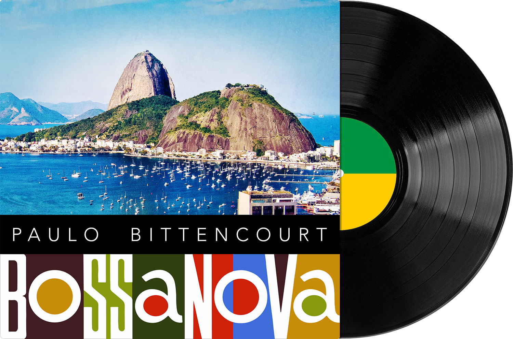

Paulo Bittencourt Singt Bossa Nova

Bossa Nova-Lieder interpretiert von Paulo Bittencourt.
Ich habe Operngesang studiert (im berühmten Konservatorium der Stadt Wien, das heute einen anderen Namen hat), aber gebe zu: meine Lieblingsmusik ist die Bossa Nova. Dieser Musikstil gefällt mir so sehr, dass ich sogar mir die Mühe gemacht habe, Gitarre zu lernen, nur um Bossa Nova spielen, mich selbst begleiten zu können.
Falls Sie es nicht wissen: Bossa Nova bedeutet in etwa Neue Coolness, Neue Kultiviertheit, und ist Ende der 1950er Jahre in Brasilien entstanden, genauer gesagt in Rio de Janeiro, wo junge Musiker (u. a. Antônio Carlos Jobim, João Gilberto, Baden Powell und Vinícius de Moraes) den damaligen Musikgeschmack altmodisch gefunden und sich für Jazz interessiert haben. Einfach gesagt ist Bossa Nova eine Mischung aus Samba und Jazz, ein cooler, intimer Samba, der nicht zum Tanzen, sondern zum Zuhören ist.
Paulo Bittencourts Musik
Song Title
- Aquarela
- O Que Será
- Tem Dó
- Tamanco no Samba
- Bonita
- Começou de Brincadeira
- Copacabana
- Deixa
- Desencontro
- Melodia Sentimental
- Mocinho Bonito
- Sonho de Um Carnaval
- Tarde em Itapuã
- Caminhos Cruzados
Verstehen Sie Englisch? Dann klicken Sie hier↗︎, um meine Geschichte der Bossa Nova zu lesen.